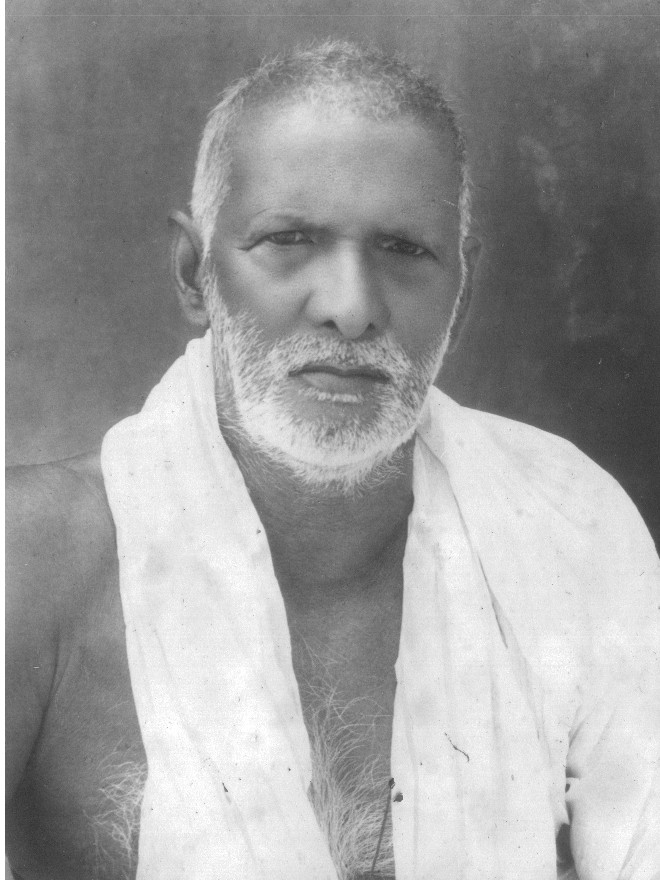
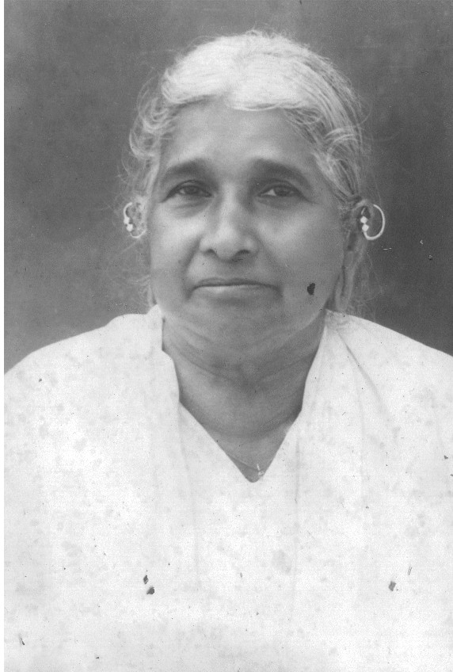
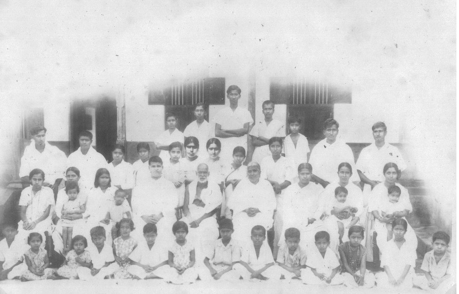

മൂന്നാമത്തെ ശാഖയിലെ 5-ഞാം തലമുറക്കാരനും, ആദ്യകാലത്തു് കല്ലറയ്ക്കൽ കൊല്ലങ്കുളത്തു വീട്ടിലും പിന്നീട് ആനത്താനത്തുവീട്ടിലും താമസിച്ചിരുന്ന കുരുവിളയുടെ ആദ്യപുത്രനും, ആറാം തലമുറക്കാരനുമായ കുഞ്ഞുവർക്കി 1869-താംമാണ്ടു മേടം 17-നു ജനിച്ചു. വിദ്യാഭ്യാസാനന്തരം പിതാവിൻറെ ആജ്ഞാനുസരണം, പുരയിടങ്ങളിലെ ജോലികൾ നടത്തി. പിതാവിന്റെ അക്കാല തൊഴിലായിരുന്ന കച്ചവടത്തിലും ഇദ്ദേഹം സഹകരിച്ചിരുന്നു. 1885-ഞാംമാണ്ടു മകരം 29-നു മീനച്ചിൽ കിഴവറയാറുകരയിൽ തറപ്പേൽ അവിരാ എന്നയാളിന്റെ പുത്രി ഏലിയെ കുഞ്ഞുവർക്കി വിവാഹം ചെയ്തു. ഏലി 1887-ഴാംമാണ്ടു മകരമാസത്തിൽ മരിച്ചുപോയതിനാൽ, 1888-ട്ടാംമാണ്ടു വൃശ്ചികം 9-നു ചൊവ്വാഴ്ച മീനച്ചിൽ ഇടമററത്തു പേരേക്കാട്ടു കരുവിളയുടെ പുത്രി മറിയയെ പുനർ വിവാഹം ചെയ്തു. ആദ്യകാലം കല്ലറയ്ക്കൽ പഴയവീട്ടിലും, പിന്നീടു കല്ലറക്കലെ പുരാതന വീടു പൊളിച്ചു് 1902 മുതൽ കരിക്കാട്ടുറുമ്പിൽ പണിയിച്ചതായ വീട്ടിലേക്കു മാറിത്താമസിക്കുകയും ചെയ്തു.
കുഞ്ഞുവർക്കിക്കു് മറിയ, കുരുവിള, ചാച്ചി, വർക്കി, ഇട്ടിയവിരാ, ചാക്കോ, റോസ, മറിയ (മാമ്മി), ഏലി, മാത്യു ഇങ്ങനെ പത്തു സന്താനങ്ങൾ ഉണ്ട്.
ആദ്യസന്താനമായ മറിയ ശിശുപ്രായത്തിൽ മരിച്ചുപോയി.
രണ്ടാമത്തെ സന്താനമായ കുരുവിള 1916-റാംമാണ്ടു വൈദീക പഠനത്തിനായി കാൻഡി സെമിനാരിയിലേക്കു പോയി. 1923 ഡിസംബർ മാസത്തിൽ പുത്തൻ കുർബാന ചൊല്ലി.
മൂന്നാമത്തെ സന്താനമായ ചാച്ചിയെ 1910-ത്താംമാണ്ടു മകരത്തിൽ മീനച്ചിൽ വിളക്കുമാടത്തു കള്ളിവയലിൽ മിഖായലിൻറെ പുത്രൻ തൊമ്മൻ വിവാഹംചെയ്തു.
നാലാമത്തെ സന്താനമായ വർക്കി, 1916 മാണ്ടു മിഥുനം 31-ന്നാം തീയതി പുളിങ്കുന്നിൽ പുത്തൻപുര കുടുംബത്തിൻറെ ഉപശാഖയായ തൈവീട്ടിൽ കുടുംബമായ വാടയ്ക്കൽ തൊമ്മൻറെ പുത്രി മറിയ (മാമ്മി) യെ വിവാഹം ചെയ്തു.
അഞ്ചാമത്തെ സന്താനമായ ഇട്ടിയവിരാ ഇംഗ്ലീഷ് വിദ്യാഭ്യാസം നടത്തി ബി.എ. പാസ്സായി. പിന്നീട് ഇദ്ദേഹത്തെക്കൊണ്ടു് അരുവിത്തുറ പൂർവ ശാഖയായ കല്ലറയ്ക്കൽ പൊട്ടങ്കുളത്തുവീട്ടിൽ സഖറിയായുടെ പുത്രിയായ ബ്രിജീത്തായെ കല്യാണം കഴിപ്പിച്ചു.
ആറാമത്തെ സന്താനമായ ചാക്കോയെക്കൊണ്ടു് കുറുമ്പനാടത്തു പവ്വത്തിൽ ഉലഹന്നൻറെ പുത്രി മറിയമ്മയെ വിവാഹം ചെയ്യിച്ചു.
1919-താംമാണ്ടു മേടത്തിൽ ഏഴാമത്തെ സന്താനമായ റോസയെ മണിമല കളത്തൂർ ചാക്കോയുടെ പുത്രനായ ഈപ്പൻ വിവാഹം ചെയ്തു.
എട്ടാമത്തെ സന്താനമായ മറിയ (മാമ്മി) കന്യകാജീവിതം ആഗ്രഹിച്ചു് 1933 തുലാം 10-ത്താം തീയതി ബാംഗളൂർ യൂറോപ്യൻ കന്യകാമഠത്തിലേക്കു പോയി. 1933 ഡിസംബറിൽ മേരി മാർഷ്യൽ എന്ന പേരു സ്വീകരിച്ചു് സഭാവസ്ത്രം സ്വീകരിക്കുകയും ചെയ്തു.
ഒൻപതാമത്തെ സന്താനമായ ഏലിയും കന്യകാജീവിതത്തിൽ പ്രവേശിച്ചു. 1936-റാംമാണ്ടു് കർക്കടകം 27-നു മംഗലാപുരം ഉപവിയുടെ കന്യകാമഠത്തിൽ ചേർന്നു് മാർത്ത എന്ന പേരു സ്വീകരിച്ചു. 1939-താംമാണ്ടു് സഭാവസ്ത്രം സ്വീകരിക്കുകയും ചെയ്തു.
കുഞ്ഞുവർക്കിയുടെ പത്താമത്തെ സന്താനമായ മത്തായിച്ചനെ (K. V. Mathew, Karickatturumpil) ക്കൊണ്ടു് പാലായിൽ വെട്ടത്തു കുര്യൻ എന്നയാളിന്റെ പുത്രി ഏലിക്കുട്ടിയെ 1939-താംമാണ്ടു് മകരം 10-നു വിവാഹം ചെയ്യിപ്പിച്ചു.
പിതാവിന്റെ ആജ്ഞാനുസരണം ആനത്താനം, കരിക്കാട്ടുറുമ്പ് മുതലായ പുരയിടങ്ങളിൽ കൃഷികാര്യങ്ങൾ നടത്തിവന്നു.
പിന്നീടു കുഞ്ഞുവർക്കി 1916-ൽ വില്ലിനി ചേരിക്കലിന്റെ കിഴക്കുഭാഗം വടക്കടുത്തു ഉദ്ദേശം 35 ഏക്കർ വിസ്തീർണ്ണത്തിൽ റബ്ബർ കൃഷി ആരംഭിച്ചു. ടാപ്പിംഗ് തുടങ്ങിയശേഷം 1923-നാംമാണ്ടും ഈ തോട്ടത്തിന്റെ തെക്കുഭാഗത്തുള്ള സ്ഥലത്തും തെങ്ങുകൃഷി ആരംഭിച്ചു. കൂടാതെ പ്ലാപ്പള്ളിത്തോടിന്റെ അരികു നീളത്തിൽ ഉദ്ദേശം 7 ഏക്കർ സ്ഥലം വെട്ടിത്താത്തുനിലമാക്കണമെന്നുദ്ദേശിച്ചു തിരിച്ചിട്ടതൊഴിച്ചു്, അതിന്റെ പടിഞ്ഞാറു ഭാഗത്തും തെക്കേയററംവരെയും തെങ്ങുകൃഷി നടത്തി. 1926-റാംമാണ്ടു പഴയ റബ്ബർ ദേഹണ്ഡത്തിൻറെ പടിഞ്ഞാറുഭാഗത്തു് ഏകദേശം 35 ഏക്കർ സ്ഥലത്തുകൂടി റബ്ബർ കൃഷി നടത്തി.
കൂടാതെ 1927-ഴാംമാണ്ടു പുളിക്കലാത്തു പുരയിടത്തിലും ആനത്താനത്തിലെ അറയ്ക്കൽ പുരയിടത്തിലും ഓരോ പുരകൾക്കുള്ള പണികൾ തുടങ്ങി. 1928-ട്ടാംമാണ്ടു് രണ്ടു പുരകളുടെയും പണി മുഴുവൻ തീർന്നു. കൂടാതെ 1923-നാംമാണ്ടു മുതൽ 1925-ഞ്ഞാംമാണ്ടുവരെയും റബർ തോട്ടങ്ങളിലേയ്ക്കും മററും ആവശ്യപ്പെട്ട കൂലി ലയങ്ങളും പാൽപ്പുരയും, പുകപ്പുരയും, രണ്ടു് ഇരുമ്പു റോളറുകളും, ഒരു ബംഗ്ലാവും കൂടി പണിതീർപ്പിച്ചു. പിന്നീട് 1927-ഴാംമാണ്ടു മുതൽ മലബാറിൽ മണർക്കാട്ടു് കരിപ്പാപ്പറമ്പിൽ ചാക്കോച്ചന് രണ്ടും ഓഹരികൾ ഉൾപ്പെടെ അഞ്ച് ഓഹരികളായി നടത്തി വന്നിരുന്ന റബർ മുതലായ കൃഷികളിൽ കുഞ്ഞുവർക്കിയും സഹോദരങ്ങളുംകൂടി, മൂന്നു ഷെയറുകളെടുത്തു. അഞ്ചു ഷെയറുകൾക്കും കൂടി 3000 ഏക്കർ സ്ഥലം വെൺപാട്ടമായി 100 കൊല്ലത്തേക്കു വാങ്ങി ദേഹണ്ഡം തുടങ്ങി. ഒരാണ്ടു കഴിഞ്ഞശേഷം, കരിപ്പാപ്പറമ്പിൽ ചാക്കോച്ചൻറെ ഭാഗം തിരിച്ചുകൊടുത്തു. ബാക്കിയുള്ള 1800 ഏക്കർ സ്ഥലം റബർ കൃഷി മുതലായവ നടത്തുന്നതിലേക്കും ഒരുക്കിവരവെ, കലാസ്ഥിതിഭേദങ്ങളാലും മറ്റു ചില കുഴപ്പങ്ങളാലും, കുഞ്ഞവർക്കിയുടെ വീതമായ 25,000 രൂപയോളം ചിലവാക്കിയതു മുഴുവനും ഉപേക്ഷിച്ചു യാതൊരു പ്രതിഫലവും ഇല്ലാതെ സഹോദരനായ തൊമ്മിക്കു് 1935-ൽ ഉപേക്ഷിച്ചുകൊടുത്തു.
ഇതിനിടയ്ക്ക് ഒററിവസ്തുവായിരുന്ന പുളിക്കലാത്തു്, മാറുകാട് പുരയിടങ്ങളുടെ ജന്മാവകാശം തീറെഴുതി വാങ്ങി. കൂടാതെ 1927-ഴാംമാണ്ടും കുഴിമററത്തു പുരയിടത്തിലുണ്ടായിരുന്ന ദേഹണ്ഡങ്ങളോടുകൂടി എഴുതിവാങ്ങി. അനന്തരകാലങ്ങളിൽ കുരിശുംമുട്ടിക്കാരുടെ വകയായിരുന്ന കരിക്കാട്ടുറുമ്പു പുരയിടത്തിൽപ്പെട്ട സർവേ 166/1 (2 ഏക്കർ 38 സെൻറ്) വരുന്ന വീതാംശങ്ങൾ ദേഹണ്ഡങ്ങളോടുകൂടി എഴുതി വാങ്ങിച്ചു. 1938-ട്ടാംമാണ്ടും വില്ലിനിയിൽ നിലമാക്കുന്നതിനായി തിരിച്ചിട്ടിരുന്ന പ്ലാപ്പള്ളി തോടിന്റെ കരയ്ക്കുള്ള സ്ഥലം വെട്ടിത്താഴ്ത്തി, മേൽത്തോടുകളും നടവരമ്പുകളും ചെറുവരമ്പുകളും ഉണ്ടാക്കി എല്ലാ ആണ്ടുകളിലും നെൽകൃഷി നടത്തിവരുന്നു.
1938-ട്ടാംമാണ്ടുവരെയും വില്ലിനി ചേരിക്കലിലേക്കോ തോട്ടത്തിലേക്കോ പോകുന്നതിനും ശരിയായ ഊടുവഴിപോലുമില്ലായിരുന്നു. അതിനാൽ സ്ഥലത്തേക്കു ഒന്നരമൈൽ നീളമുള്ള ഒരു റോഡ് വെട്ടിത്തീർത്തു. ആവശ്യമായ പാലവും കലുങ്കുകളും ചിറയിട്ടുപിടിപ്പിക്കേണ്ട സ്ഥലങ്ങളിൽ അതും, കുഞ്ഞവർക്കിയുടെ സ്വന്തം ചിലവിൽ തന്നെ ഉണ്ടാക്കി. ഈ റോഡ് സ്വന്തം ആവശ്യങ്ങൾക്കും, സഹോദരങ്ങൾക്കും, അയൽ വസ്തുഉടമസ്ഥന്മാർക്കും, അന്യർക്കും ഉപയോഗപ്രദമായിത്തീർന്നു.
1939-താംമാണ്ടും ആനക്കല്ലിലുള്ള മുണ്ടയ്ക്കൽ എന്നു പറയുന്ന പറമ്പും അതിനു തൊട്ടുള്ള കണ്ണുപറമ്പുപുരയിടവുൾപ്പെടെ 11 ഏക്കർ ദേഹണ്ഡങ്ങളോടുകൂടിയ പുരയിടങ്ങളും കുഞ്ഞുവർക്കി വിലയ്ക്കു വാങ്ങി. അതിൽ ഒരു പുര പണിയിച്ചു് ആറാമത്തെ സന്താനമായ ചാക്കോയെ അവിടെ താമസിപ്പിച്ചു. കൂടാതെ മുട്ടാർ പകുതിയിലുള്ള 1750 പറ നെല്ലവീതം ആണ്ടുതോറും പാട്ടം കിട്ടുന്നതായ പുഞ്ചനിലങ്ങൾ വിലയ്ക്കുവാങ്ങി അന്നുമുതൽ പാട്ടത്തിനു ഏല്പിച്ചു.
കുഞ്ഞുവർക്കിയുടെ പിതാക്കന്മാരായി കല്ലറയ്ക്കൽ കുടുംബത്തിൽ മരിച്ചുപോയിട്ടുള്ളവരുടെ ആത്മാക്കൾക്കു നിത്യശാന്തി ലഭിക്കുന്നതിനായി ആണ്ടുതോറും, 17 കുർബാനകൾ വീതം നടത്തക്കവിധം പെ.ബ. മെത്രാനച്ചൻ തിരുമനസിലെ അനുമതി കല്പനപ്രകാരം 1060 രൂപാ പള്ളിയിൽ ഏല്പിച്ച് കുർബാന നടത്തിവരുന്നു.
1976-ൽ പ്രസിദ്ധീകരിച്ച കല്ലറയ്ക്കൽകുടുംബചരിത്രത്തിൽ നിന്നുള്ളതാണ് മേൽപ്പറഞ്ഞ ഭാഗം.
Below are excerpts from the Kallarackal Family History book that was republished in 1976:
Kuruvila Kunjuvarkey, a sixth-generation member of the Kallarackal family, was the eldest son of Kunjuvarkey Kuruvila Anathanam. He was born on the 17th of Medam in the Malayalam calendar, corresponding to AD 1869. Upon completing his education, he began assisting his father in the management of their Kanjirapally plantations and commodity business. His first marriage was to Aley, the daughter of Avira from Meenachil Kizhavarayarukarayil, on the 29th of Makaram in AD 1885. Aley passed away in Makaram of AD 1887. Subsequently, he married Mariya, daughter of Kuruvila from Meenachil Edamattathu Perekkattu, on Tuesday, the 9th of Vruchikam in 1888. Following his marriages, he initially remained in the old Kallarackal house with his father and stepmother. Later, the ancient house in Kallarakkal was demolished and moved to be joined with the kitchen shed at the Karickatturumbil farmstead. Then he moved to this house at the Karickatturumbil farmstead.
Kunjuvarkey has ten children: Maria, Kuruvila, Chachi, Varkey, Ittiyavira, Chacko, Rosa, Mariya (Mammy), Eli, and Mathew.
The daughter, Mariya, died in infancy.
The second child, Kuruvila, went to the Kandy Seminary for Catholic religious studies in 1916. He celebrated his first mass in December 1923.
Chachi, the third child, was married to Mikhayal's son Thomman from Meenachil Vilakkumadam Kallivayalil in Medam, 1910.
The fourth child, Varkey, married Mary (Mammy), daughter of Vadakkal Thomman of the Thaiveetil family, a sub-branch of the Puthenpura family, in Pulinkunnil on 31st Mithanam, 1916.
The fifth child, Ittiyavira, studied English and passed his B.A. Later, Ittiyavira B.A. was married to Brijitha, the daughter of Zacharias at Pottamkulam house, who are descendants of the ancient Kallarackal family from Aruvithura.
He arranged the marriage of his sixth son, Chacko, to Mariamma, the daughter of Ulahannan of Powathil, Kurumbanadam.
In Medam 1919, Rosa, the seventh child, was married to Eappen, the son of Chacko Kalathoor, Manimala.
The eighth child, Mary (Mammy), desired a virginal life and went to the European Convent in Bangalore on 10th Thulam 1933. In December 1933, she took the name Mary Martial and received the religious habit.
The ninth child, Eli, also entered the life of a virgin. On 27th Karkkadakam, 1936, she joined the nunnery of Upavi, Mangalore and took the name Martha. She also received the religious habit in 1939.
Kunjuvarkey's tenth child, Mathayichan (K. V. Mathew, Karickatturumpil), was married to Elikutty, the daughter of Vettathu Kurian in Pala, on 10th Makaram in 1939.
Following his father's orders, he carried out agricultural work on his homesteads in Anathanam and Karikatturumbu.
Later, in 1916, Kunjuvarkey started rubber cultivation on an area of about 35 acres on the northeastern side of Villini Cherikkal. After tapping commenced, coconut cultivation was started on the southern side of this plantation in 1923. In addition, it was planned to clear about 7 acres of land along the edge of the Plapallithodu and turn it into a paddy field, and coconut cultivation was carried out on its western and southern sides. In 1926, rubber cultivation was carried out on an area of about 35 acres on the western side of the old rubber plantation.
In addition, work began on one of the houses at Pulikalathu property and the other at Arakkal property in Anathanam in 1927. The work on both houses was completed in 1928. From 1923 to 1925, he built quarters for laborers working at the rubber plantations, a latex shed with two iron rollers, a smokehouse to smoke the rubber, and a bungalow.
In 1927, Kuruvachan (Kunjuvarkey's father) and Karippaparambil Chackochen entered into a 100-year lease for a 3000-acre property in Mannarkad. The property was divided into five shares, with Kuruvachan receiving three shares and Chackochen two. The men collaborated on agricultural development of this land for about a year before Chackochen and Kuruvachan began developing their shares independently. Kunjuvarkey inherited approximately 450 acres from his father's share. He invested around Rs. 25,000 into this land, cultivating rubber and various cash crops. However, in 1935, Kunjuvarkey transferred his share of this Mannarkad property to his brother, Thommy.
The hereditary rights to the separate Pulikalathu and Marukad homesteads were acquired through a deed. Subsequently, in 1927, the Kuzhimattathu homestead was purchased, including its associated deeded lands. Later acquisitions included survey 166/1 (2 acres 38 cents) of the Karikatturumbu homestead, which previously belonged to the Kurishummuttil family, along with its deeded lands. Furthermore, in 1938, the land set aside for Villini, located on the banks of the Plappally stream, was cleared and leveled, and it has been used for paddy cultivation annually ever since.
Before 1938, Villini Cherikkal and its surrounding areas lacked a proper road connection. (Cherikkal, in Malayalam, refers to a large parcel of land suitable for cultivation, such as for rubber, coconut, or black pepper.) To address this issue, a one-and-a-half-mile-long road was constructed. Kunjuvarkey personally financed the construction of the necessary bridges and culverts for this project. The new road benefited not only Kunjuvarkey but also his brothers, neighboring property owners, and the broader community.
In 1939, Kunju Varkey acquired two properties: the Mundakkal land in Anakallu and the adjacent Kannuparambu farm, which included 11 acres of land and existing buildings. He constructed a house on this property for his sixth child, Chacko, who then settled there. Additionally, he bought the 1750 para paddy fields in the Muttar half, which he subsequently leased out, continuing the practice of annual rental.
In order to grant eternal peace to the souls of the deceased in the Kallarakkal family, and his immediate family, 17 Masses are celebrated every year by handing over Rs. 1060 to the church as per the permission of the Bishop of the Holy See.
It is with the deepest reverence and a heart overflowing with praise that we acknowledge the guiding hand of God in all these occurrences. We offer special and heartfelt thanksgiving to the Almighty for allowing these very events—with all their complexities, challenges, and blessings—to transpire and unfold in our lives. This perspective is rooted in the unwavering conviction that nothing happens outside of the sovereign will and divine permission of the Creator. Every circumstance, every trial, and every triumph is ultimately part of a greater, benevolent plan, meticulously orchestrated for our ultimate good and the glory of God. Therefore, our response is one of absolute surrender and profound gratitude. We do not merely tolerate what has happened; we actively praise God for the allowance of it all, recognizing a higher purpose woven into the fabric of these experiences. This is a testament to an enduring faith that finds reason for worship even within the most unexpected or difficult situations.
|
 |
 |
|
 |
|